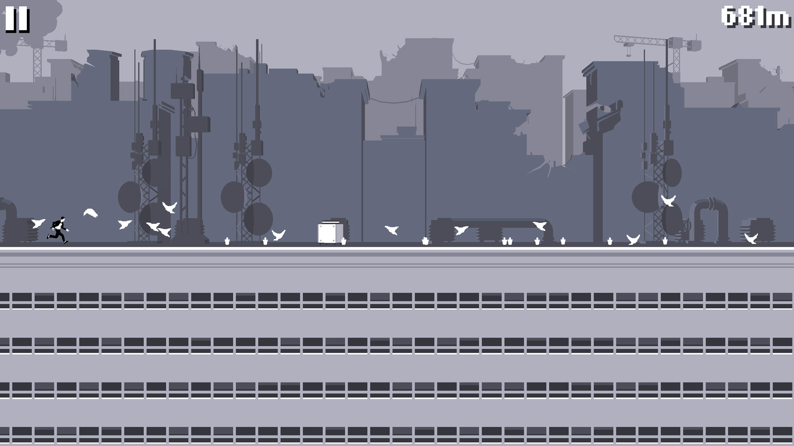
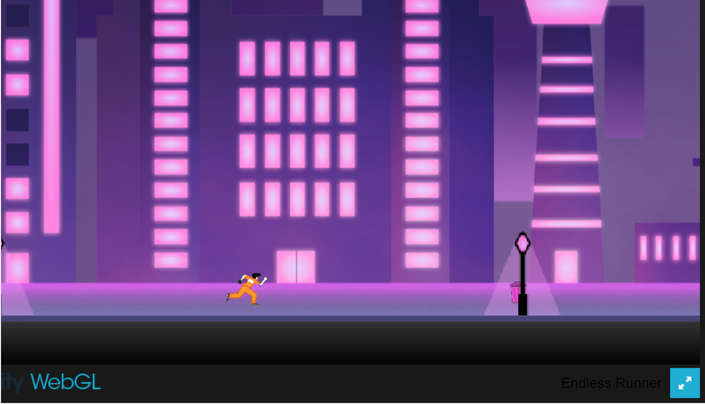
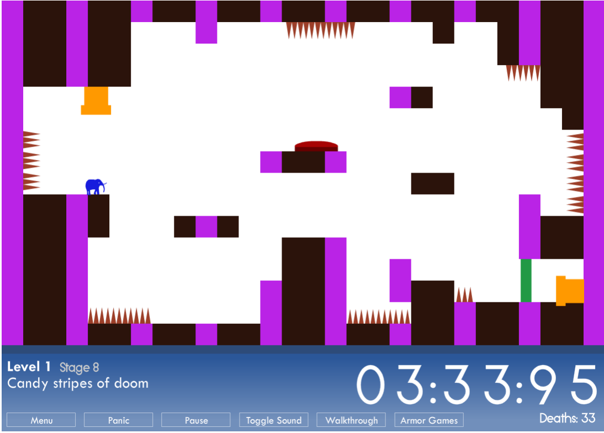

Video Game Lab

During friday’s game lab I had the opportunity to play quite a few games. Some of these games were: “Tokyo Scape” (a game made by previous students from this class), “Canabalt” and “This is the Only Level.” And although each of them are very unique in their own right such as style and artwork, I still managed to notice some similarities between them, but mainly “Tokyo Scape” and “Canabalt.” First of all, the two of them have this very similar system of running and dodging objects. In tokyo scape the character dodges bullets and trash cans by doing slides/jumps and in canabalt you jump through windows, across buildings, and over boxes or trash cans (not quite sure what they are). The character that you play as, also never stops running. But in Canabalt the player gets faster the more you progress through the game and in Tokyo Run the game stays the same speed, however the obstacles/objects do get faster randomly throughout the game, So I guess in a way they both are similar but in different ways. “This is the Only Level” isn’t as similar, but it still reminds me of these two due to the fact that you also need to dodge objects (the spikes) and you also try to do it as fast as possible to beat someone else’s record or your personal record (you don’t stop). Sure one can take it slow and steady but don’t expect to get a good time.

To me, the difference between playing a game and observing someone else play, is that when you are watching someone else play you can analyze how they are playing and interacting with the game… and if they make a mistake you can avoid it when it is your turn to play the game, or you may discover new tricks or strategies if you already played the game. It can also be quite entertaining watching them play and seeing them react to certain parts. Playing yourself immerses you into the game and you are now on your own to discover things. There might be a lot of trial and error, but the experience in itself is way better and more satisfying, especially when you finally learn to master all the controls and the game’s mechanics on your own.
